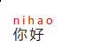
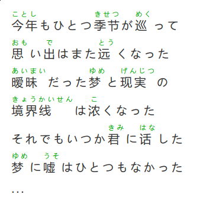
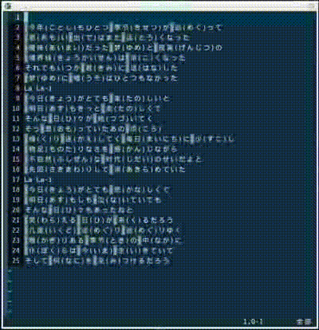
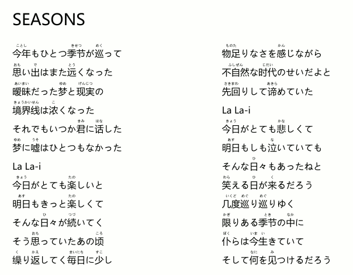

HTML的注音排版和其它
1. ruby 标签
记得很多年前，我用 CSS 折腾了一个注音的排版格式，与别人交流时，别人问我，“为什么你不直接使用 ruby 标签呢？” 那时我才知道 HTML 中有一个叫 ruby 的标签是专门用来处理注音场景的。
<p> <ruby>你好<rt style="color: red;">ni hao</rt></ruby> </p> <p> <ruby>你好<rt style="color: red;">ni hao</rt></ruby> </p>
结果会显示成：
你好
你好
当时，只是这样，其实你没有办法控制注音与正文之间的间距，我尝试了一些方式，发现这样处理可以：
<p> <ruby style="display: inline-block;"><rt style="color: red; line-height: 10px;">nihao</rt>你好</ruby> </p>
显示出来就是（移动端可能不支持）：
你好
图片：

比如下面的代码：
<style> .ruby { font-size: 20px; } .ruby p { margin: 10px 0; } .ruby ruby { display: inline-block; } .ruby rt { line-height: 12px; font-size: 12px; color: #00a905; } </style> <div class="ruby"> <p><ruby><rt>ことし</rt>今年</ruby>もひとつ<ruby><rt>きせつ</rt>季节</ruby>が<ruby><rt>めく</rt>巡</ruby>って</p> <p><ruby><rt>おも</rt>思</ruby>い<ruby><rt>で</rt>出</ruby>はまた<ruby><rt>とう</rt>远</ruby>くなった</p> <p><ruby><rt>あいまい</rt>暧昧</ruby>だった<ruby><rt>ゆめ</rt>梦</ruby>と<ruby><rt>げんじつ</rt>现実</ruby>の</p> <p><ruby><rt>きょうかいせん</rt>境界线</ruby>は<ruby><rt>こ</rt>浓</ruby>くなった</p> <p>それでもいつか<ruby><rt>きみ</rt>君</ruby>に<ruby><rt>はな</rt>话</ruby>した</p> <p><ruby><rt>ゆめ</rt>梦</ruby>に<ruby><rt>うそ</rt>嘘</ruby>はひとつもなかった</p> <p>...</p> </div>
显示出来是（移动端可能不支持）：
今年もひとつ季节が巡って
思い出はまた远くなった
暧昧だった梦と现実の
境界线は浓くなった
それでもいつか君に话した
梦に嘘はひとつもなかった
...
图片：

2. VIM 中如何快速生成上面的代码
（这是我临时想到的一个有些好玩的事）
首先，很容易在网上找到这样的原始的文本：
今年（ことし）もひとつ季节（きせつ）が巡（めく）って 思（おも）い出（で）はまた远（とう）くなった 暧昧（あいまい）だった梦（ゆめ）と现実（げんじつ）の 境界线（きょうかいせん）は浓（こ）くなった それでもいつか君（きみ）に话（はな）した 梦（ゆめ）に嘘（うそ）はひとつもなかった ...
相应的注音会写在括号里，我们要把它们变成带 <ruby> 标签的片段，可以很快速地这样处理。
首先，把中文的括号，换成英文的括号，这是为了后面在“宏”中方便输入。这步简单的查找替换就好了， :%s/（/(/g ，不细说。
然后，手工把注音对应的汉字标记一下。（这一步，理论上，通过正则匹配非假名字符，是可以自动做到的，反正内容不多，我就手动了）得到这样的内容（在对应汉字前加一个 | ）：
|今年(ことし)もひとつ|季节(きせつ)が|巡(めく)って |思(おも)い|出(で)はまた|远(とう)くなった |暧昧(あいまい)だった|梦(ゆめ)と|现実(げんじつ)の |境界线(きょうかいせん)は|浓(こ)くなった それでもいつか|君(きみ)に|话(はな)した |梦(ゆめ)に|嘘(うそ)はひとつもなかった
接首，我们先查找一下 | ，即 /| 。做这一步的目的，是使 vim 查找并且高亮出所有的 | 字符，之后，我们通过 n 就可以直接移动到下一个 | 的位置了，这对我们执行宏非常方便。
接着输入 @a 开始录制一个把汉字部分写成 <ruby> 标签形式的宏，最后的具体操作是：
（针对单组 |今年(ことし) 我们来看）
n移动到|的位置a进入编辑模式，光标在|后面。<80>kb按 <BS> 键，把|删除。<ruby>输入<ruby>。^[<ESC> 退出编辑模式。f当前行，向前查找，并把光标移动到其位置。)查找)。a进入编辑模式，光标在)后面。</ruby>输入</ruby>。^[<ESC> 退出编辑模式F当前行，向后查找，并把光标移动到其位置。(查找(。v进入“块选择”模式。f向前选。)选到)的位置。d删除（删除内容放到缓存区）。F当前行，向后查找。>查找>。p粘贴（缓存区内容粘贴到当前位置）。F当前行，向后查找。(查询(。a进入编辑模式。<80>kb按 <BS> 键，把(删除。<rt>输入<rt>。^[按 <ESC> 退出编辑模式。f向前查找。)查找)。a进入编辑模式。<80>kb按 <BS> 键，把)删除。</rt>输入</rt>。^[按 <ESC> 退出编辑模式。
完整的放一起，就是：
na<80>kb<ruby>^[f)a</ruby>^[F(vf)dF>pF(a<80>kb<rt>^[f)a<80>kb</rt>^[
这些看起来很多，但是因为是录制，完全是记录每一步键盘的操作而已。
录完之后，按一下 q （普通模式下），把这个宏保存到 a 这个缓冲区了。接着，输入 999@a 执行 999 次，就可以了。

3. 使用 LaTeX 排版注音
如果你需要纸制输出，那么更好的选择自然是 LaTeX 。当你有各种“非正常”的输出需求时，总可以在 LaTeX 上找到超高质量的方案的。（ ruby 宏包可以处理注音）
\documentclass[12pt]{article} \usepackage{geometry} \geometry{a4paper,left=1cm,right=1cm,top=3cm,bottom=3cm} \usepackage{xeCJK} \setCJKmainfont{微软雅黑} \setmainfont{微软雅黑} \usepackage{ruby} \renewcommand\rubysep{-0.6em} \linespread{1.7} \pagestyle{empty} \usepackage{multicol} \begin{document} {\LARGE\textbf{SEASONS}} \begin{multicols}{2} \ruby{今年}{ことし}もひとつ\ruby{季节}{きせつ}が\ruby{巡}{めく}って \ruby{思}{おも}い\ruby{出}{で}はまた\ruby{远}{とう}くなった \ruby{暧昧}{あいまい}だった\ruby{梦}{ゆめ}と\ruby{现実}{げんじつ}の \ruby{境界线}{きょうかいせん}は\ruby{浓}{こ}くなった それでもいつか\ruby{君}{きみ}に\ruby{话}{はな}した \ruby{梦}{ゆめ}に\ruby{嘘}{うそ}はひとつもなかった La La-i \ruby{今日}{きょう}がとても\ruby{楽}{たの}しいと \ruby{明日}{あす}もきっと\ruby{楽}{たの}しくて そんな\ruby{日}{ひ}々が\ruby{続}{つづ}いてく そう\ruby{思}{おも}っていたあの\ruby{顷}{ころ} \ruby{缲}{く}り\ruby{返}{かえ}してく\ruby{毎日}{まいにち}に\ruby{少}{すこ}し \ruby{物足}{ものた}りなさを\ruby{感}{かん}じながら \ruby{不自然}{ふしぜん}な\ruby{时代}{じだい}のせいだよと \ruby{先回}{さきまわ}りして\ruby{谛}{あきら}めていた La La-i \ruby{今日}{きょう}がとても\ruby{悲}{かな}しくて \ruby{明日}{あす}もしも\ruby{泣}{な}いていても そんな\ruby{日}{ひ}々もあったねと \ruby{笑}{わら}える\ruby{日}{ひ}が\ruby{来}{く}るだろう \ruby{几度}{いくど}\ruby{巡}{めぐ}り\ruby{巡}{めぐ}りゆく \ruby{限}{かぎ}りある\ruby{季节}{とき}の\ruby{中}{なか}に \ruby{仆}{ぼく}らは\ruby{今}{いま}\ruby{生}{い}きていて そして\ruby{何}{なに}を\ruby{见}{み}つけるだろう \end{multicols} \end{document}
